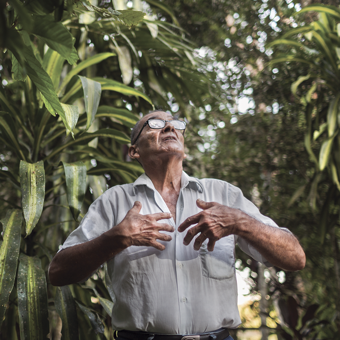
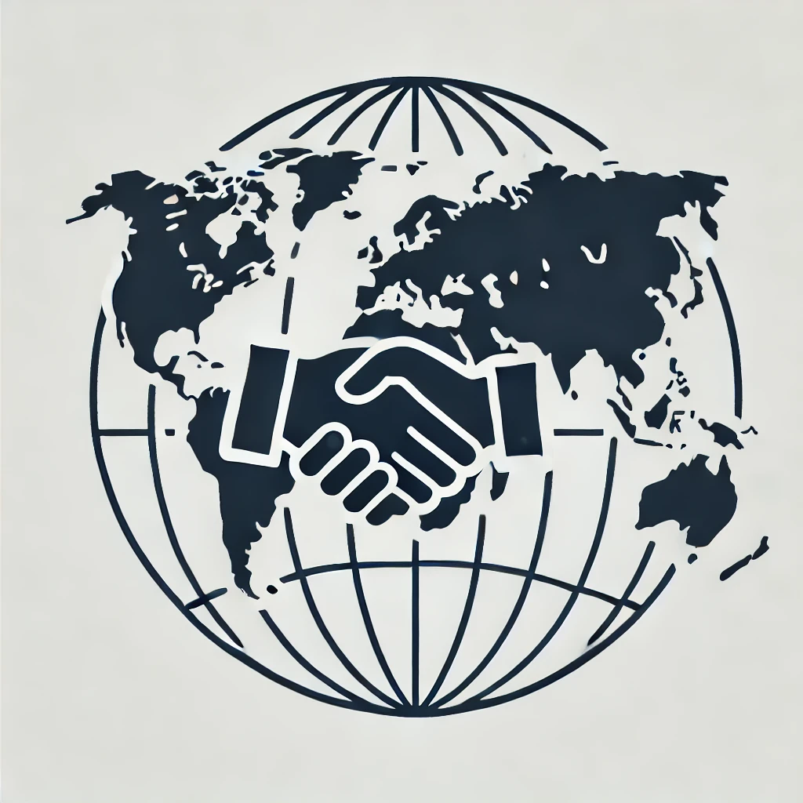

April 3–5, 2026 | Imbabura, Ecuador
Register
April 3–5, 2026 | Imbabura, Ecuador
Register
Strengthening Indigenous leadership and territorial decision-making.

Community-led strategies for biodiversity protection.

Nature-based solutions and equitable climate action.

Protection and support for frontline defenders.

Data, mapping, and community monitoring tools.

Empowering new generations of leaders.

Territorial economies and sustainable development.

Building collaboration across regions.
The first day focuses on grounding the gathering in territorial realities, highlighting Indigenous leadership, ancestral knowledge, and community governance systems. Participants will explore how territories are defended, managed, and sustained across different regions of the world.
The second day explores collaborative approaches, innovation, and practical strategies for addressing climate change, biodiversity loss, and territorial threats. It emphasizes co-creation, partnerships, and learning across regions.
The final day is dedicated to building long-term alliances, strengthening networks, and defining collective actions. Participants will work together to shape shared commitments and future collaboration pathways.